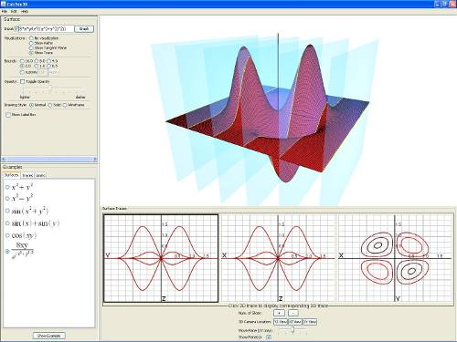
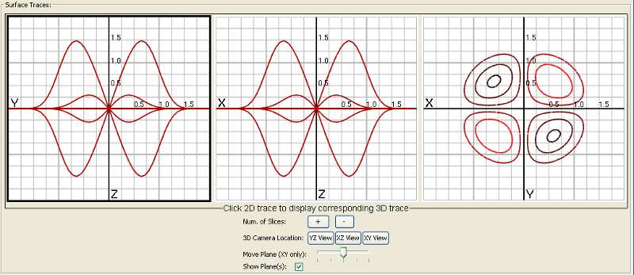
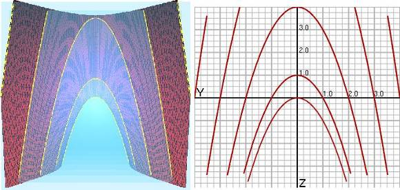

Chapter 2: Traces Visualization
- Chapter 1: Introduction
- Chapter 2: Traces Visualization
- Chapter 3: Tangent Plane Visualization
- Chapter 4: Limit Path Visualization
- Chapter 5: Suggested Uses of Visualizations
Getting Started
To activate the traces visualization, click on the “Traces” radio box under “Visualizations”. Doing so will change the screen so it looks similar to this:
The new panel at the bottom of the screen contains the traces panel. The traces panel has two parts: the top part displays all three traces of the surface in 2D, while the bottom part holds the trace controls.
From left to right, the traces are: YZ, XZ, and XY. For the XY trace (also called level curves), the colors represent the height of the given curve. Low curves have darker color, while higher curves have lighter color, i.e. the higher the curve on the surface, the lighter the color is.
Changing the trace displayed in the 3D window
The 2D trace that is highlighted in black is also being displayed in the 3D window. In order to change the trace currently being shown in the 3D window, click on a different 2D trace to highlight it and display it in the 3D window.
Adjusting the camera
Under “3D Camera Location” you can select one of three buttons that will move the camera so it looks down one of the axes at a plane. This lets you view the 3D trace from the same perspective as its respective 2D trace.
Changing the number of slices (trace lines)
You can increase and decrease the number of trace lines for the YZ and XZ traces by clicking the buttons labeled “+” and “-”. However, the number of level curves on the XY trace is fixed.
Disabling the planes
To disable viewing the transparent planes, uncheck the “Show plane(s)” check box.
Moving the level curve plane
If you are viewing the XY trace in the 3D window and “Show planes” is enabled, you can move the horizontal plane up and down the z-axis by moving the slider labeled “Move Plane”. This is useful for seeing level curves at different heights and how they change as z increases (or decreases).